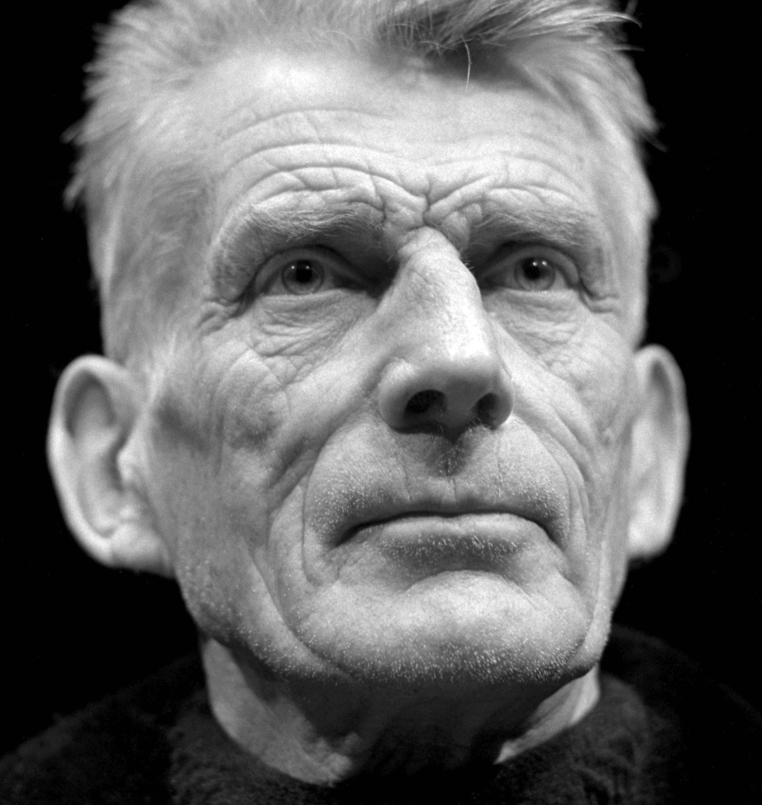

Python for Computer Vision in Biology and Beyond
Luis Pedro Coelho (EMBL)
On twitter: @luispedrocoelho
Webpage: http://luispedro.org
Blog: http://metarabbit.wordpress.com
About Me

Picked up a few degrees on the way
- MS & BS in computer science (U Lisbon)
- PhD in computational biology (CMU)
- Currently, a computational biologist at EMBL
I'm driven by problems in biology
- I now care about solvings problems.
- I need to write code/develop methods
- But if off-the-shelf simple solution exists,
so much the better.

I release my software as open source
- Because that's how I started doing things.
- Because I think that this is what should be done.
- Because it forces me to write better code.
- Because other people contribute
(even just bug reports are very useful [I outsource QA])
I was using Python for computer vision before it was cool

- There were no packages for these tasks back in 2008-2007
- pymorph was a Python-only abandoned project.
- Had to write my own code for everything. (scratch your own itch).
- Turns out other people found it useful

Python is now a viable alternative for image processing
Being task-focused makes me naturally agile
- Bad agile means no design
- Good agile means constant (re)design
- At any given time, I was writing code that made my life easier
- I'm still interested in exploring links between science & agile
Python now has a large & growing ecosystem of scientific packages around numpy
Numpy provides basic data types (arrays, matrices).
Packages provide intelligence.
The wider ecosystem

Multiple packages act together
- An image type (numpy array).
- Types to hold computed data (numpy array again).
- Plotting & displaying (matplotlib).
- Machine learning (scikit-learn).
Modularity enables "invisible hand collaboration"
- Improvements to one package benefit all.
- Enables distributed "invisible hand collaboration".
- Numarray was written by physicists,
mahotas was motivated by fluorescent microscopy,
pandas was motivated by financial sector... - None of this matters for you, you just get to use good software!
Basic packages are stable, others are expanding

Consistency helps human users
- Single type for many uses.
- Many simple operations can be done in numpy.
- Same basic conventions.
- No copying/conversion of data between packages.
Packages are not very intrusive
- No complex object-oriented frameworks with many types
functions & simple objects - Mahotas is 100% pure functions.
- This allows for easier mix & match
- (Only works because we have numpy)
This Ain't Your Grandfather's Open Source

Python Standard Library now looks very 1990's
Is Our Work Done?
- Code growth is leveling off.
- Python for science has reached maturity.
Yes, but not really
- Python has caught up with alternatives, now needs to speed ahead.
- A lot of new stuff in the pipeline:
Bokeh, Numba, PyPy... - At the same time, larger datasets impose new challenges
- Perhaps we will have a new round of confusion/consolidation very soon
Image processing & computer vision in Python
Scikit-image and OpenCV are excellent tools
- We all have different tradeoffs
- Two-dimensional vs. multi-dimensional
- Speed vs. flexibility
- Focus on natural images vs. scientific images
- Feel free to mix & match
Example of using mahotas
import mahotas as mh
from matplotlib import pyplot as plt
im = mh.imread('image_stretched.jpeg')
sigma = 2.3
imf = mh.gaussian_filter(im.mean(2), sigma)
binary = (imf > imf.mean())
labeled, _ = mh.label(binary)
plt.imshow(labeled)
The Why of Mahotas
- Just work or fail well
- Well documented
- Fast code
- Simple code
- Minimal dependencies
Try very hard to "just work"
- Accept different types or convert types
- Accept non-contiguous arrays
- Sometimes have multiple implementations
slow but flexible as well as fast and furious.
Ever tried. Ever failed. No matter. Try Again. Fail again. Fail better.
- Things need to work well,
but they also need to fail well. - I am obsessed with error messages
- This is the reason that mahotas uses hand-written C++ bindings
- This is also why we need to minimize dependencies
Fast code means compiled code
- Mahotas is written in C++
template<typename T>
void bbox(const numpy::aligned_array<T> array,
numpy::index_type* extrema) {
gil_release nogil;
const int N = array.size();
typename numpy::aligned_array<T>::const_iterator pos = array.begin();
for (int i = 0; i != N; ++i, ++pos) {
if (*pos) {
numpy::position where = pos.position();
for (int j = 0; j != array.ndims(); ++j) {
extrema[2*j] = std::min<numpy::index_type>(
extrema[2*j], where[j]);
extrema[2*j+1] = std::max<numpy::index_type>(
extrema[2*j+1], where[j]+1);
} } } }
Basic Pipeline
- Image loading.
- Image filtering (morphological, Gaussian, &c)
- Feature computation (Haralick, LBPs, SURF, &c)
- Machine learning.
Image Loading is getting pixels from Bytes
d8ff e1ff 1a39 7845 6669 0000 4949 002a 0008 0000 000c 0100 0004 0001 0000 0a00 0000 0101 0004 0001 0000 0780 0000 010f 0002 0008 0000 00b2 0000 0110 0002 000a 0000 00ba 0000 0112 0003 0001 0000 0001 0000 011a 0005 0001 0000 00c4 0000 011b 0005 0001 0000 00cc 0000 0128 0003 0001 0000 0002 0000 0131 0002 000c 0000 00d4 0000 0132 0002 0014 0000 009e 0000 0213 0003 0001 0000 0002 0000 8769 0004 0001 0000 00e0 0000 02e0 0000 3032 3431 303a 3a39 3431 3120 3a31 3533 323a 0031 4153 534d 4e55 0047 5447 492d 3138 3039 0000 0048 0000 0001 0000 0048 0000 0001 0000 3849 3931 5830 4158 414e 0032 0017 829a 0005 0001 0000 01fa 0000 829d 0005 0001 0000 0202 0000 8822 0008 0001 0000 0003 0000 8827 0003 0001 0000 0032 0000 9000 0007 0004 0000 3230 3032 9003 0002 0014 0000 021e 0000 9004 0002 0014 0000 020a
Image loading is surprisingly hard
- Loading an image from disk to image is not a trivial issue
- No single library for all formats.
- Especially for non-basic formats (beyond PNG or JPEG),
but even those are problematic. - Number one source of user issues (directly or indirectly)
- Unglamarous problem that gets little love
Mahotas' (partial) solution
- Rely on external packages
- Mahotas-imread
- FreeImage
- We used to fall back on matplotlib if neither was available, but that was unreliable
Mahotas-imread? What?
- Spin-off package just to read & write images!
- Kept separately to avoid bringing in dependencies to mahotas
- Not ideal solution
- We are all struggling with this issue
Code that runs here is easy, code that runs there is hard
- This is especially true for "glue stuff together" code.
- Java's write once, run everywhere was a very appealing promise.
- Paradox: we have a lot of tools, modularity is good, dependencies are bad.
- Virtualenv/pip/buildout, rubyenv, cabal sandbox, npm, apt-get...
I don't have a solution.
Do not be a nit
- Try to make your code degrade well
- Work around bugs in 3rd party libraries
- Fix things that are not your fault
Linus wrote in one of his famous emails
> Are you saying that pulseaudio is entering on some weird loop if the > returned value is not -EINVAL? That seems a bug at [CLIENT APPLICATION]. If a change results in user programs breaking, it's a bug in the kernel. We never EVER blame the user programs. How hard can this be to understand?
Reminder: We have a tutorial afterwards
- Tutorial will present more details of what's available in Mahotas &c
- We will look at a particular application that's cool machine learning & was done in Python
Learning to quantify fraction of NETs in images
- Quantification of Neutrophil Extracellular Traps (NETs)
- Neutrophils physically ensnare bacteria by exploding and using their DNA fibers to build a net
(This is work currently under review.)
Neutrophils explode and leave NETs, bacteria eat them

Problem
- Can we automatically quantify the fraction of NETs?
- Key idea: We do not need perfect segmentation
(similar to Learning to Count framework)

Step I: Loading
import mahotas as mh
protein = mh.imread('protein.tiff')
dna = mh.imread('dna.tiff')
plt.imshow(mh.as_rgb(dna, protein, 0))
Step II: Gaussian filter
protein = mh.gaussian_filter(protein, 1.2)
Step III: Build grid
markers = np.zeros_like(protein)
markers[16::32, 16::32] = 1
markers,_ = mh.label(markers)
Step IV: Watershed
regions = mh.cwatershed(protein.max() - protein, markers)
Step V: Compute features
features = []
fractions = []
for n in range(regions.max()):
cur_region = protein * (regions == (n+1))
features.append(mh.features.haralick(cur_region, ignore_zeros=True))
fractions.append(handlabeled[regions == (n+1)].mean())
- Haralick features are just numbers computed from images
- ignore_zeros tells the function to ignore zero-valued pixels
Step VI: Call random forest from scikit-learn
from sklearn.ensemble import RandomForestRegressor
est = RandomForestRegressor()
est.fit(features, fractions)
We obtain good agreement with gold standard

How good is 93 percent?
Well, how good are humans (the baseline method)?

Comparison example

Label it twice
- If your method uses human labeled data,
label it twice - Many cases, humans are not that great
- In our case, operator bias is major issue
but bias seems consistent
Whole computation is managed with jug
- Prototype to publication to reproduction without breaks
- Easy to reproduce
- Smallish problem (100 CPU hours)
- We will make the code available when paper is accepted
- This will ensure perfect reproducibility
(and extendibility).
Jug use cases
- Parameter sweeps
- Preprocessing of large data
- Embarassingly parallel problems
- Coarse grained parallelism

Jug Tasks
- A Task is a Python function & its arguments
- Arguments can be either values or results of other Tasks
- Thus, Tasks implicitly define a dependency graph
- A Task is identified by its hash
- Hash of function name + arguments (recursively)
Design Decisions
- Code is not taken into account for hash.
- This means that changing the code will not trigger recomputation
- Explicit invalidate operation triggers recomputation of all dependent tasks
Jugfile
from jug import TaskGenerator
@TaskGenerator
def double(x):
return x * 2
@TaskGenerator
def print_resuls(value):
with open('output.txt', 'w') as out:
out.write("Result: {}\n".format(value))
four = double(2)
final = double(four)
print_resuls(final)
Jug execution loop
for task in alltasks:
if backend.has_data(task):
print("Task is already done")
elif backend.has_data(task.dependencies()):
if backend.lock(task):
r = task.execute()
backend.write(task.hash(), r)
Summary
- The Python Numpy-based ecosystem is powerful and flexible.
- A good abstraction/API allows for "invisible hand collaboration"
- Dependencies are a hard problem
but too much code makes it harder than it needs to be. - Mahotas &c are great for computer vision
- Everyone has its memoization system
but different tradeoffs. - Don't leave, there's a tutorial coming up!
Thank You
Preparation for Tutorial
- Go to https://github.com/luispedro/python-image-tutorial
- Follow the Sagemath Cloud instructions.
- You can also install locally
(but I will use the online version)